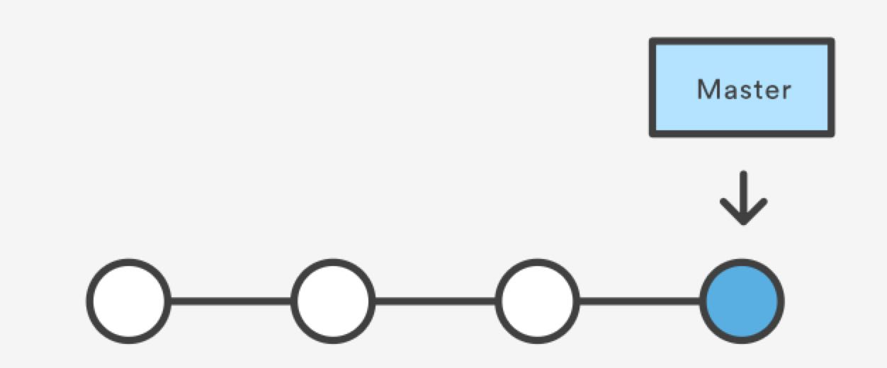
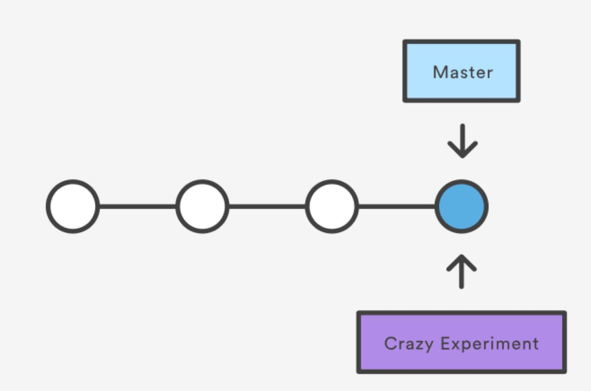
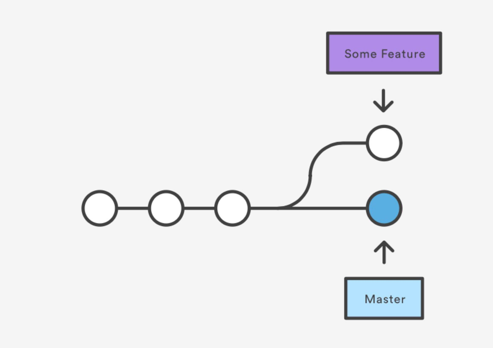
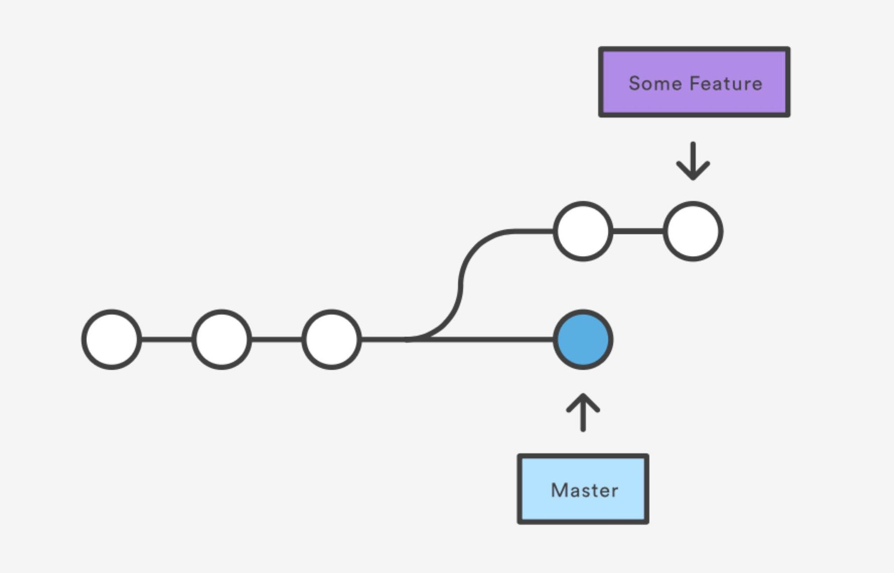
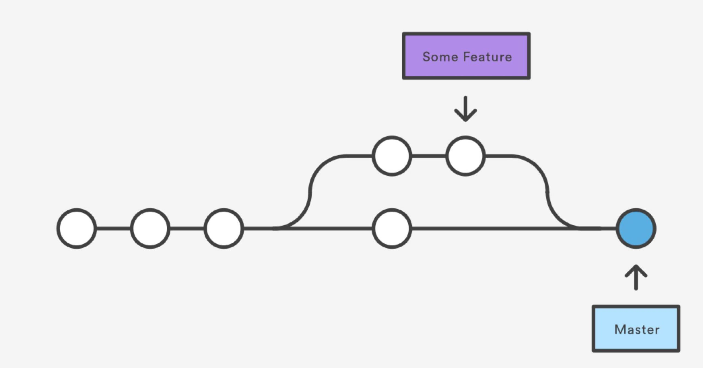

лекция #3
Системы контроля версий. Git.
Короткое содержание
- Что такое VCS?
- Виды VCS
- Сервисы для совместной разработки
- Терминология
- Работа с репозиторием. Основные команды.
- ...
Version control system
Cascading Style Sheets - Каскадные таблицы стилей
- Что?
Способ хранения истории изменений в определенных документах.
- Зачем?
Версионирование, бэкап, разрешение конфликтов, цикл разработки, трекинг, ветвление.
Виды систем контроля версий
- Git
- Subversion(CVS, SVN)
- Mercurial
- ...
Сервисы для совместной разработки
Терминология
- Репозиторий (repository) - место в котором хранятся файлы и история их изменений.
- Коммит (commit) - "чекпоинт", отметка об изменении в определенном файле(-ах).
- Ветка (branch) - направление истории, которое являет собой копию всего проекта в определенный момент.
- Конфликт (conflict) - ситуация, когда несколько пользователей сделали изменения в одном и том же файле.
- Слияние (merge) - объединений двух независимых изменений (коммитов или группы коммитов) в одну версию документа.
- Получение (pull) - обновить свои местные версии файлов до тех что находятся в хранилище (репозиторий).
- Обновление (push) - выкладывание новой версии документа.
- Перенос (rebase) - перемещение на более позднюю точку(коммит).
- Версия (revision) - версия документа (номер).
- Тег (tag) - метка в определенном месте и версии документа.
- Мастер (master) - основная ветка разработки проекта (по-умолчанию).
Инициализация репозитория
git init
Связь с удаленным репозиторием
git remote add origin https://github.com/[username]/[repository-name].git
Добавление файлов
Добавление конкретного файла
git add app.py
Добавление всех файлов сразу
git add --all
Добавление папки с файлами
git add src/
Отмена добавленных файлов
git reset
Создание отметки в истории изменений(коммит)
git commit -m "Remove old bugs, add new one"
Отправить свой коммит в удаленное хранилище(репозиторий)
git push origin [имя ветки]
Получить последние изменения из удаленного репозитория
git pull origin [имя ветки]
git fetch origin
git clone https://github.com/[username]/[repository-name]
Репозиторий и история изменений

Создание новой ветки для нововведения
(опять правки 😢)

Ветвление
Создание ветки
git branch crazy-experiment
Удаление ветки
git branch -d crazy-experiment
Переход на ветку
git checkout crazy-experiment
Текущая ветка и список всех веток
git branch
Создание и переход на ветку
git checkout -b crazy-experiment
Коммит и пуш в "эксперимент"

Еще один коммит и пуш в "эсперимент"

Слияние веток

Переход на нужную ветку
git checkout master
Слияние
git merge crazy-experiment
Удаление только что сделаного коммита
git reset --hard HEAD~1
Если коммит был запушен, тогда нужно потереть его еще и в репозитории
git push origin HEAD --force